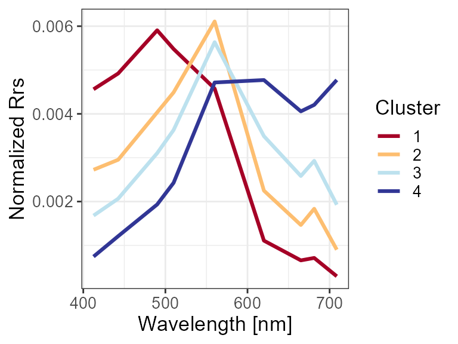
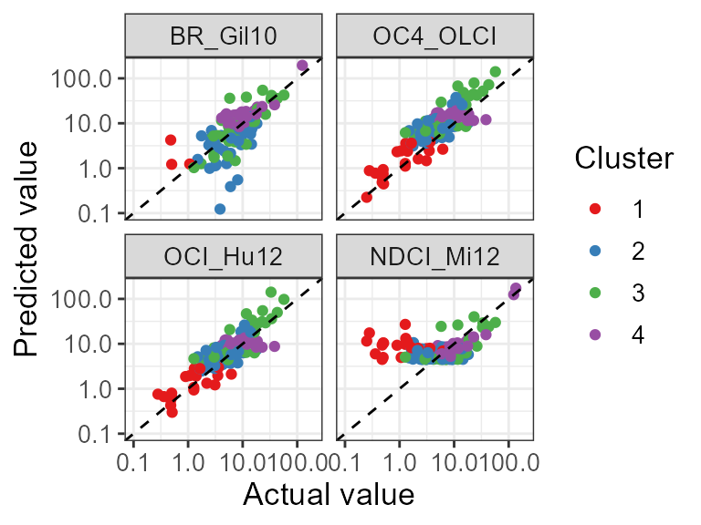
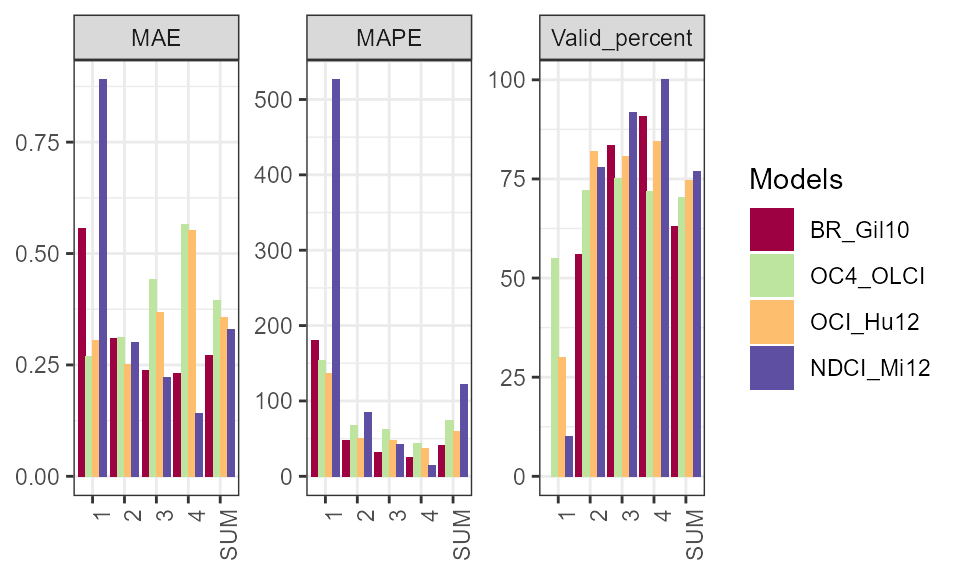
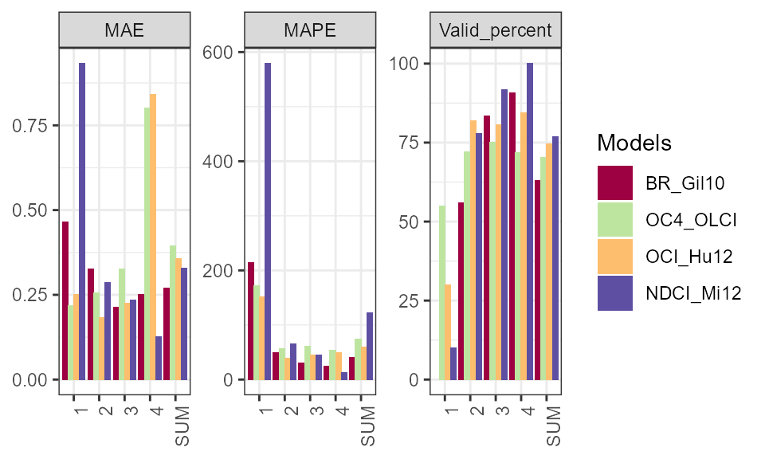

vignettes/Assessment.Rmd
Assessment.RmdThis vignette mainly shows how to use function Assessment_via_cluster() for comparing several algorithms if membership values (returned by FCM.new()) are given. I am also happy to introduce the function run_all_Chla_algorithms() for running all supported Chla estimation algorithms (run Chla_algorithms_name() to see the algorithm names).
Here we use the Nechad2015 dataset as the example. Similarly, 100 samples are randomly selected from the original set to save the running time. You can test the whole set if you want.
Based on some prior knowledge (shown in other vignettes), we set the cluster number (i.e., nb) as 4 and run the FCMm with normalized spectra.
library(FCMm)
library(ggplot2)
library(magrittr)
library(stringr)
data("Nechad2015")
x <- Nechad2015[,3:11]
wv <- gsub("X","",names(x)) %>% as.numeric
set.seed(1234) # Set this seed so that you can re-produce them
w <- sample(1:nrow(x), 150) # sample some rows of the orignal data, you can test the whole set if you like
x <- x[w, ]
names(x) <- wv
nb = 4 # Obtained from the vignette "Cluster a new dataset by FCMm"
set.seed(1234)
FD <- FuzzifierDetermination(x, wv, do.stand=FALSE)
result <- FCM.new(FD, nb, fast.mode = TRUE)
p.spec <- plot_spec(result, show.stand=TRUE)
print(p.spec$p.cluster.spec)
Chla <- Nechad2015$X.Chl_a..ug.L.[w]
Chla[Chla >= 999] <- NABR_Gil10, OC4_OLCI, OCI_Hu12, and NDCI_Mi12 are selected for estimating the Chla concentration. Since there are several NA values in the selected measured Chla concentration (also termed as actual value) from Nechad2015, observations including NA values are removed from the input set.
dt_Chla <- run_all_Chla_algorithms(x) %>% as.data.frame
dt_Chla <- data.frame(
Chla_true = Chla,
BR_Gil10 = dt_Chla$BR_Gil10,
OC4_OLCI = dt_Chla$OC4_OLCI,
OCI_Hu12 = dt_Chla$OCI_Hu12,
NDCI_Mi12= dt_Chla$NDCI_Mi12
) %>% round(3)
w = which(!is.na(dt_Chla$Chla_true))
dt_Chla = dt_Chla[w,]
memb = result$res.FCM$u[w,] %>% round(4)Shown in the scatter plots, the OC4_OLCI and OCI_Hu12 performed better than other two algorithms across all water clusters.
data.frame(dt_Chla, cluster = result$res.FCM$cluster[w] %>% as.character) %>%
reshape2::melt(., id=c("Chla_true","cluster")) %>%
ggplot() +
geom_point(aes(Chla_true, value, color=cluster, group=variable)) +
geom_abline(slope=1, intercept=0, linetype=2) +
facet_wrap(~variable) +
scale_x_log10(limits=c(0.1, 200), name="Actual value") +
scale_y_log10(limits=c(0.1, 200), name="Predicted value") +
scale_color_brewer(palette = "Set1", name="Cluster") +
theme_bw() +
theme(text = element_text(size=13))
There is no need cluster information in the function Assessment_via_cluster() because the cluster will be found via membership matrix (i.e., the parameter memb). I fully recommend to set na.process = TRUE so that the function will count the valid result. plot.col is very useful when you want to visually see the performance comparison between different algorithms.
colnames(memb) <- 1:4
Asses_soft <- Assessment_via_cluster(pred = dt_Chla[,-1],
meas = dt_Chla[,1],
memb = memb,
log10 = TRUE,
hard.mode = FALSE,
na.process = TRUE,
plot.col = TRUE)
Asses_hard <- Assessment_via_cluster(pred = dt_Chla[,-1],
meas = dt_Chla[,1],
memb = memb,
log10 = TRUE,
hard.mode = TRUE,
na.process = TRUE,
plot.col = TRUE)
Asses_soft$res_plot_facet
| BR_Gil10 | OC4_OLCI | OCI_Hu12 | NDCI_Mi12 | |
|---|---|---|---|---|
| 1 | 0.557 | 0.269 | 0.305 | 0.890 |
| 2 | 0.308 | 0.310 | 0.251 | 0.300 |
| 3 | 0.237 | 0.441 | 0.368 | 0.221 |
| 4 | 0.230 | 0.564 | 0.552 | 0.141 |
| SUM | 0.271 | 0.396 | 0.357 | 0.329 |
| BR_Gil10 | OC4_OLCI | OCI_Hu12 | NDCI_Mi12 | |
|---|---|---|---|---|
| 1 | 180.59 | 153.69 | 136.81 | 526.10 |
| 2 | 47.51 | 67.72 | 50.46 | 85.16 |
| 3 | 32.06 | 62.26 | 48.02 | 41.99 |
| 4 | 24.94 | 44.03 | 37.40 | 14.62 |
| SUM | 40.45 | 73.51 | 59.45 | 121.90 |
Asses_hard$res_plot_facet
| BR_Gil10 | OC4_OLCI | OCI_Hu12 | NDCI_Mi12 | |
|---|---|---|---|---|
| 1 | 0.466 | 0.218 | 0.252 | 0.932 |
| 2 | 0.326 | 0.256 | 0.183 | 0.285 |
| 3 | 0.214 | 0.327 | 0.226 | 0.235 |
| 4 | 0.252 | 0.802 | 0.840 | 0.127 |
| SUM | 0.271 | 0.396 | 0.357 | 0.329 |
| BR_Gil10 | OC4_OLCI | OCI_Hu12 | NDCI_Mi12 | |
|---|---|---|---|---|
| 1 | 214.10 | 172.19 | 151.53 | 578.86 |
| 2 | 49.84 | 56.00 | 39.70 | 65.03 |
| 3 | 30.39 | 61.11 | 44.91 | 44.37 |
| 4 | 24.64 | 53.16 | 49.12 | 12.39 |
| SUM | 40.45 | 73.51 | 59.45 | 121.90 |